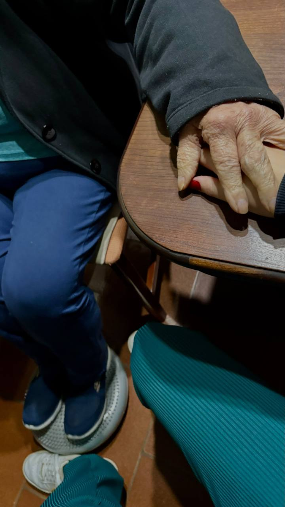

Área do paciente
Um espaço de cuidado.
Também para você.
Estamos preparando o acesso individual de pacientes e familiares ao sistema Olhan.
Os logins ainda não foram disponibilizados. Quando estiverem prontos, a equipe orientará cada paciente ou responsável sobre como entrar com seu próprio acesso.
Acesso em preparação
Precisa de ajuda com seu atendimento? Nossa equipe continua disponível pelo WhatsApp.
Falar com a equipe
Proximidade em cada etapa.